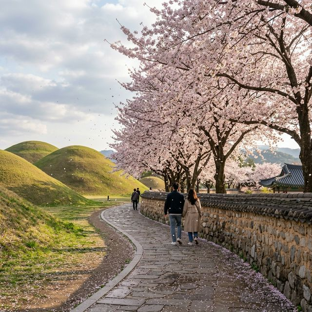
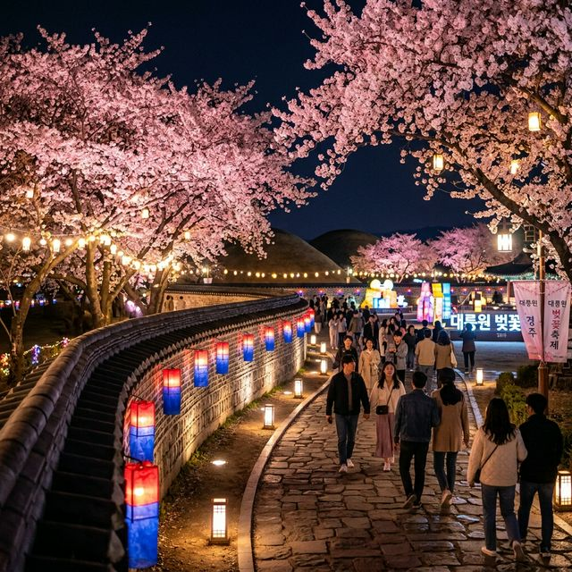
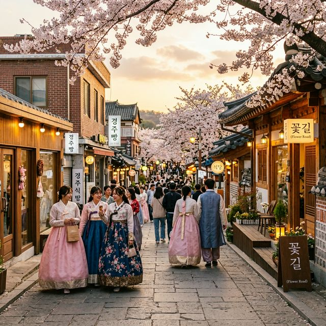

솔직히, 경주 벚꽃이라고 하면 빠르게 보문단지부터 떠올리기 쉬운데요. 저는 이번에 대릉원 돌담길을 처음 제대로 찾아보고 나서야 "아, 여기가 진짜 경주 봄의 정수구나" 싶었습니다. 천년 왕국의 무덤 위로 벚꽃이 내려앉고, 울퉁불퉁한 돌담 너머로 분홍 꽃잎이 떨어지는 그 광경이란 — 서울 여의도나 벚꽃 명소들과는 차원이 다른 이야기입니다.
3월 27일경부터 경주 시내 벚꽃이 개화를 시작했고, 개화 후 일주일이면 만개에 이릅니다. 4월 1일 현재, 대릉원 일원의 벚꽃은 70~80% 개화율로 이번 주말(4월 3~5일)이 사실상 절정이 될 가능성이 매우 높습니다. 경주시가 운영하는 '벚꽃 알림이 서비스'에서는 당일 촬영한 실시간 사진으로 개화 현황을 확인할 수 있으니, 출발 전 꼭 체크해 보세요.

경주 대릉원 돌담길 — 천년 고분 능선을 따라 벚꽃이 만개한 봄의 풍경
경주 대릉원(大陵苑)은 신라 왕들의 고분 23기가 모여 있는 유네스코 세계유산 지구입니다. 고분의 부드러운 능선이 만드는 지평선 위로, 이 시기에는 빽빽하게 심어진 왕벚나무들이 터널을 이루죠. 돌담길의 거친 질감과 벚꽃의 부드러운 분홍이 대비를 이루며 만들어내는 분위기는, 일본의 정원식 벚꽃이나 서울 한강의 화려함과는 결이 완전히 다릅니다.
여기에 한복을 입으면 그야말로 시간여행이 따로 없습니다. 황남동 일대에는 한복 대여점이 여럿 있어 1~2만 원 선에서 쉽게 빌릴 수 있고, SNS 감성 사진을 찍으려는 20~30대 커플과 가족 단위 방문객들로 이 시기면 항상 성황입니다. 실제로 경주 대릉원 돌담길 사진은 매년 벚꽃 시즌이면 인스타그램 '인기 게시물'에 등장할 정도로 비주얼 경쟁력이 독보적입니다.
| 항목 | 내용 |
|---|---|
| 주소 | 경북 경주시 황남동 일원 (대릉원 정문 기준) |
| 입장료 | 대릉원 일반 3,000원 / 경주 주민 무료 (천마총 입장 포함) |
| 벚꽃 터널 길이 | 황남빵 삼거리 ~ 첨성대 삼거리 약 1km 구간 |
| 2026 축제 기간 | 4월 3일(금) ~ 4월 5일(일) |
| 축제 운영 시간 | 13:00 ~ 22:00 (야간 벚꽃 라이트쇼 포함) |
| 주요 행사 | 벚꽃거리예술로, 돌담길 마켓, 야간 조명 연출 |
축제 기간 돌담길 일원에는 버스킹, 국악 공연, 전통 놀이 체험 등 다양한 거리 예술 프로그램이 13시부터 저녁까지 이어집니다. 한복을 입은 악사들이 대금과 해금을 연주하는 풍경 자체가 하나의 콘텐츠가 됩니다. 사전 예약 없이 현장에서 자유롭게 즐길 수 있는 무료 프로그램이 대부분이라는 점도 장점입니다.
로컬 푸드 마켓과 경주 특산 공예품 판매 부스가 돌담길 곳곳에 펼쳐집니다. 경주 찰빵, 황남빵 시식, 전통 과자 등을 맛볼 수 있고, 도자기·한지·천연염색 등 경주 장인의 작품을 구경하거나 구매하는 재미도 쏠쏠합니다. 이 시기 이 마켓은 현지인들도 벚꽃 구경 겸 나들이 삼아 즐겨 찾는 곳입니다.
솔직히 낮의 대릉원 돌담길도 아름답지만, 야간 축제가 열리는 오후 6시 이후부터가 진짜입니다. 고분 능선을 따라 설치된 조명과 돌담에 투영되는 빛의 연출이 낮과는 전혀 다른 분위기를 만들어냅니다. 차갑지 않은 봄밤 공기 속에 핑크빛 조명을 받은 벚꽃이 흩날리는 장면은, 직접 본 사람만이 아는 감동입니다.

야간 라이트쇼 — 조명을 받은 벚꽃과 고분의 환상적인 조화
4월 3~5일 주말 동안 대릉원 일원은 차 없는 거리로 운영됩니다. 황남빵 삼거리~첨성대 삼거리 구간에 차량 통제가 실시되며, 특히 4월 4일(토)은 제33회 경주벚꽃마라톤대회까지 겹쳐 도심 교통이 역대급으로 혼잡해질 예정입니다. 이 날 자차 고집하다가 주차장 찾아 2시간을 날리는 분들을 매년 목격합니다.
| 주차지 | 거리 | 비고 |
|---|---|---|
| 쪽샘지구 임시주차장 | 도보 10분 | 무료 운영, 조기 만차 가능성 높음 |
| 경주 강변 공영주차장 | 도보 15~20분 | 유료, 비교적 여유로운 편 |
| 경주역 인근 주차장 | 셔틀 또는 도보 25분 | 경주역에서 황남동 방향 시내버스 활용 |
| 대릉원 정문 주차장 | 도보 2분 | 축제 기간 조기 만차 확실 — 비추천 |
처음 가시는 분들을 위해, 놓치면 아쉬운 핵심 포토존을 정리했습니다. 인스타그램 벚꽃 피드를 '나도' 찍고 싶다면 이 순서대로 따라가시면 됩니다.
대릉원을 나와 도보 5분이면 황리단길입니다. 경리단길의 경주 버전이라는 별명처럼, 한옥과 현대 카페·레스토랑이 섞여 독특한 거리 분위기를 만드는 곳입니다. 여기서 절대 빼놓으면 안 되는 맛집들을 정리했습니다. 벚꽃 축제 시기에는 웨이팅이 기본이니, 캐치테이블 앱으로 미리 줄을 걸어두는 전략이 필수입니다.

황리단길 — 한복 차림의 여행자들과 봄꽃이 어우러진 경주의 핫플레이스
| 상호명 | 대표 메뉴 | 특징 |
|---|---|---|
| 향화정 | 꼬막무침 비빔밥, 경주 육회 비빔밥 | 한옥 식당, 웨이팅 필수. 오픈런 추천 |
| 동리 | 한정식, 모던 갈비찜 | 한옥 모던 재해석 인테리어, 가족 단위 인기 |
| 청온채 | 미나리 닭전골, 들기름 육회 비빔밥 | 건강식, 깔끔한 맛 선호자 추천 |
| 대릉갈비 | 한우 갈비 (쇼케이스 직접 선택) | 숯불 직화, 고기 마니아 성지 |
| 료미 | 깻잎 페스트 고마소바, 스테이크 덮밥 | 오랫동안 사랑받는 퓨전 일식 |
대릉원에 벚꽃이 이리도 아름다운 데는 역사적 이유가 있습니다. 1960~70년대 경주 개발 당시 도시 경관과 관광 목적으로 황남동 일대에 대규모 왕벚나무 식재 사업이 진행됐고, 그 나무들이 50년 넘게 자라 지금의 거목 벚꽃 터널을 만들었습니다. 즉, 신라 천년의 유산 위에 현대가 심은 벚꽃이, 세월이 쌓여 다시 '경주의 자연스러운 봄 풍경'이 된 것입니다.
대릉원 내 천마총은 내부 관람이 가능한 유일한 고분으로, 5세기 신라 왕릉으로 추정됩니다. 1973년 발굴 당시 금관, 금제 허리띠, 그리고 천마도(국보 제207호)가 발견되었죠. 벚꽃 구경에 천마총 내부 관람을 더하면, 단순한 꽃놀이가 아닌 1,500년 역사 여행이 됩니다. 입장료는 대릉원 통합권 3,000원에 포함되어 있습니다.
기상청 자료에 따르면 2026년 경주 지역 3월 평균기온은 평년 대비 1~2도 높게 형성되어, 벚꽃 개화 시기가 평년보다 3~5일가량 빨라졌습니다. 3월 27일 개화 시작 → 4월 1일 현재 70~80% 개화율 → 4月 3~5일 만개 절정의 흐름이 자연스럽습니다.
단, 4월 6일(일) 이후부터는 낙화가 시작될 가능성이 높습니다. 특히 이번 주말(4/4~5)에 강풍 예보가 있다면 빠른 낙화로 이어질 수 있으니, 시기를 놓치지 않는 것이 가장 중요한 포인트입니다. 벚꽃은 기다려주지 않습니다.
| 날짜 | 예상 상태 | 추천 여부 |
|---|---|---|
| 4월 1일(水) | 70~80% 개화 | ✅ 좋음 (평일 한적) |
| 4월 2일(木) | 80~90% 개화 | ✅ 좋음 (평일 한적) |
| 4월 3일(金) | 만개 절정 시작 | ⭐ 최고 (축제 첫날) |
| 4월 4일(土) | 만개 절정 | ⭐ 최고 (단, 마라톤 교통 혼잡) |
| 4월 5일(日) | 만개 ~ 낙화 시작 | ✅ 좋음 (축제 마지막 날) |
| 4월 6일(月) 이후 | 낙화 급속 진행 | ⚠️ 서두를 것 |
이번 주말 경주 숙소는 이미 상당수 선점된 상태입니다. 아직 예약하지 않으셨다면 지금 당장 확인해보세요. 도보 이동이 편리한 대릉원 주변 황남동 게스트하우스나 한옥 스테이가 분위기와 위치 면에서 압도적으로 유리합니다.
🌸 경주 대릉원돌담길 축제: 4월 3일(금) ~ 5일(일) / 13:00 ~ 22:00
올봄 벚꽃 여행지를 고민 중이라면, 경주 대릉원 돌담길은 왜인지 선택지에서 자꾸 빠지는 곳입니다. 하지만 한번 가보신 분들은 매년 다시 찾는다는 게 이 곳의 진짜 매력入니다. 천년 왕국의 능선
위로 벚꽃이 흩날리는 그 한 장면, 올해 놓치지 마세요.
출처 및 참고: 경주시 공식 문화관광 누리집 (gyeongju.go.kr), 경주시 벚꽃 알림이 서비스, 경주예술의전당 (garts.kr) 2026 대릉원돌담길
축제 공식 안내
※ 본 게시물은 공식 자료를 기반으로 작성되었으나, 개화 상황과 교통 정보는 현지 상황에 따라 변동될 수 있습니다. 방문 전 경주시 공식 채널을 통해 최신 정보를 반드시 확인하세요.
👉 함께 읽으면 좋은 글: 사실상 KTX 공짜 여행: 코레일 여행가는봄 KTX 100% 환급 완전
정복
👉 함께 읽으면 좋은 글: 강릉 경포 벚꽃 실시간 현황 — 4월 4~11일 경포벚꽃축제 완벽 가이드
#경주벚꽃 #대릉원돌담길 #경주벚꽃축제2026 #경주여행 #대릉원벚꽃 #황리단길맛집 #경주축제 #벚꽃여행 #경주한복 #봄여행지추천 #경주당일치기 #경주1박2일 #대릉원야간개장 #경주벚꽃마라톤 #천마총